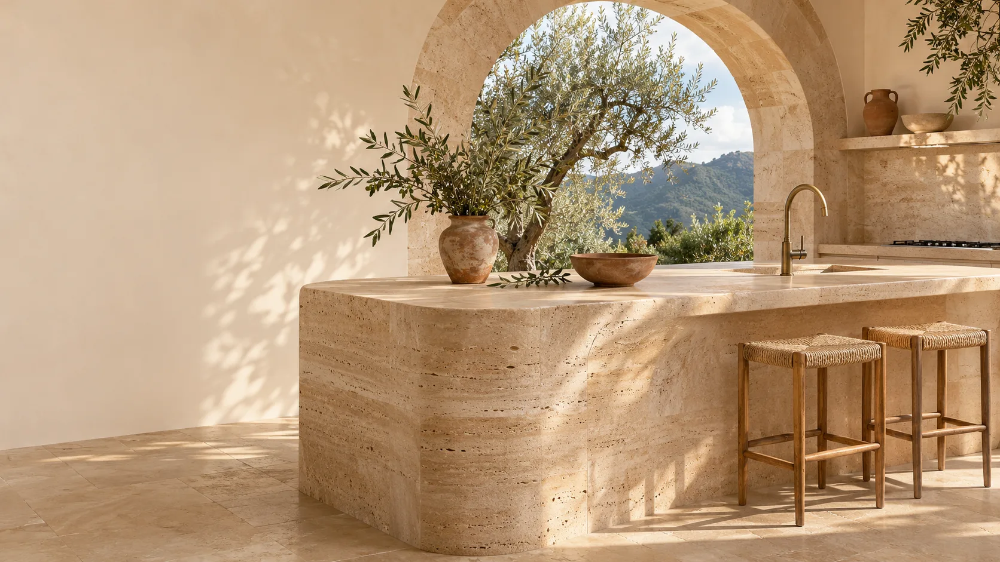
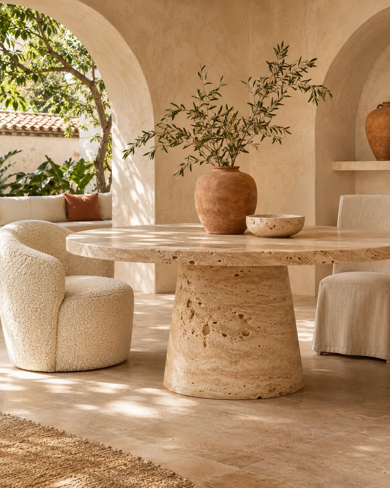
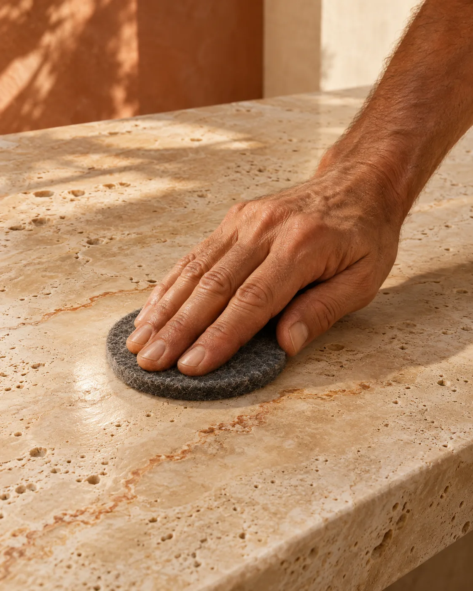

Piedra natural · Diseño de vidaLa materia
La materia
toma forma.
Diseño, vida y cuidado en piedra natural para espacios que perduran.
Explorar proyectosArquitectura · Materia · Personas
Crear
Stone DesignProyectos en piedra natural a medida.

Habitar
Living DesignMobiliario, mesas y objetos que dan forma a la vida.

Preservar
Stone CareCuidado y restauración para que la belleza perdure.
Productos destacados
Explorar colecciónPaleta material
Consultar materialesMarine Ink#18343C
Terracotta#AE7256
Sand#CEB99B
Limewash#F2EADC
Stone Design
Espacios que perduran.
Del material al detalle, concebimos proyectos que unen oficio, arquitectura y naturaleza.
Iniciar proyectoStone Care
Cuidar también es diseñar.
El valor de la piedra perdura cuando se conoce, se protege y se restaura con criterio.
Conocer servicios →CALIZA GROUP
Crear.Hablemos de tu proyecto.
Te acompañamos desde la idea hasta su realización. Los canales comerciales y formularios estarán disponibles al terminar la configuración operativa.
Habitar.
Preservar.